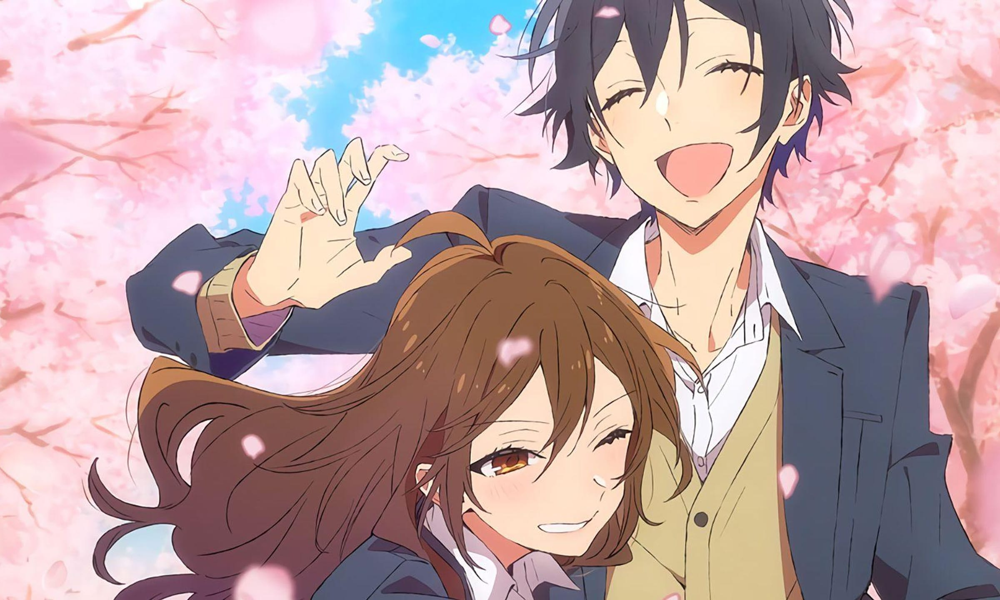
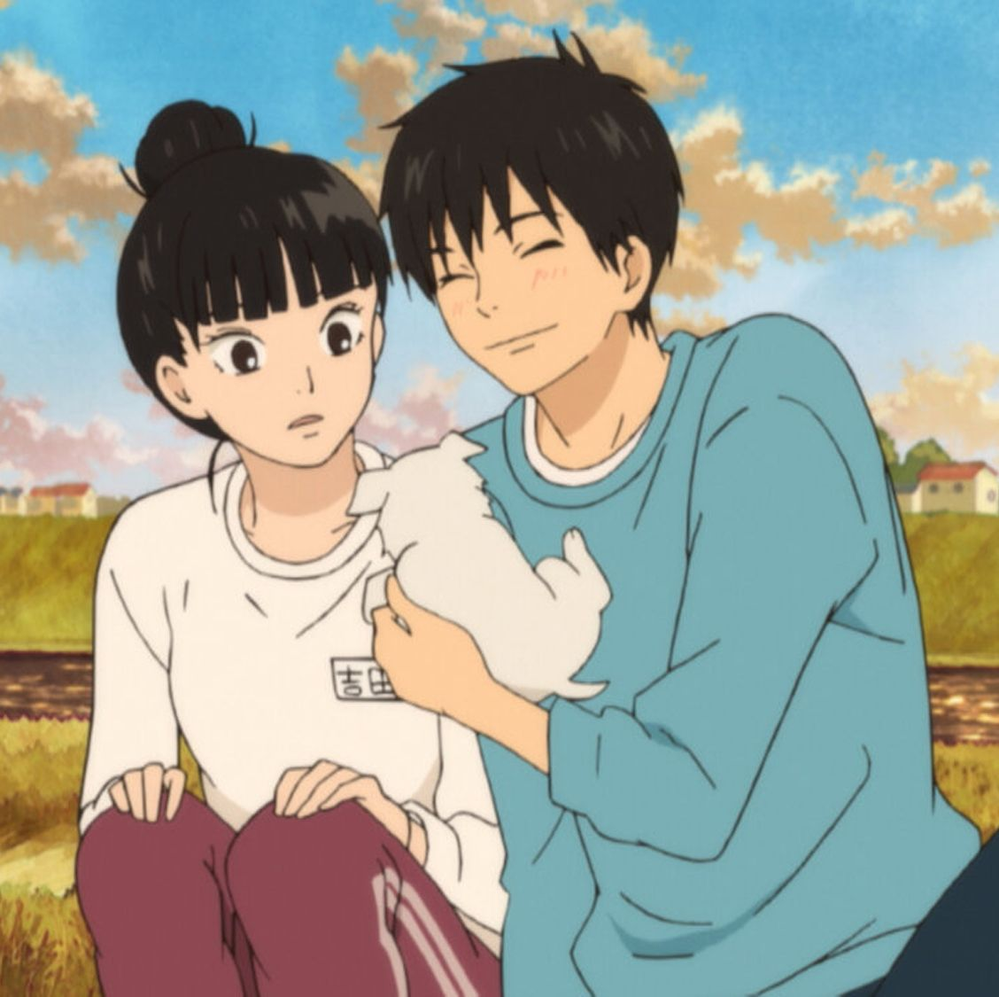
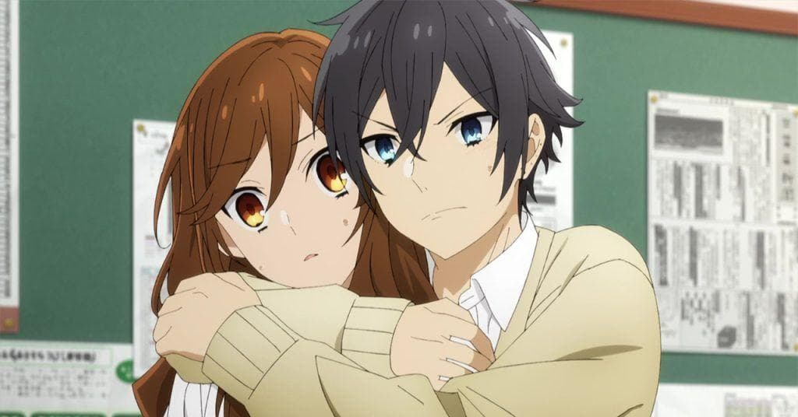
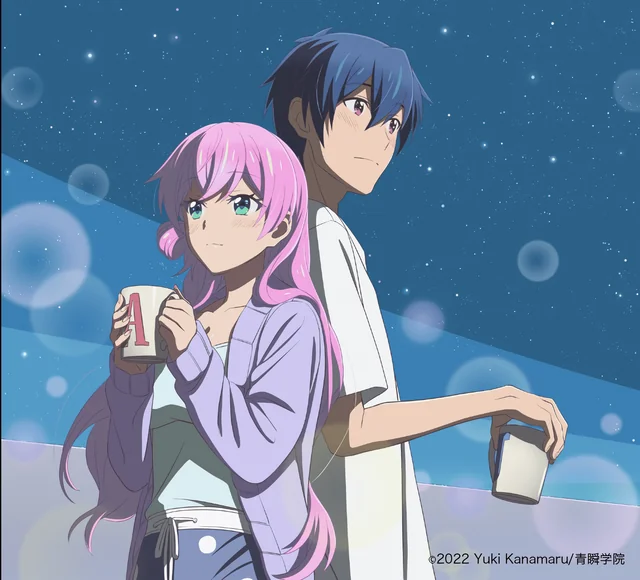
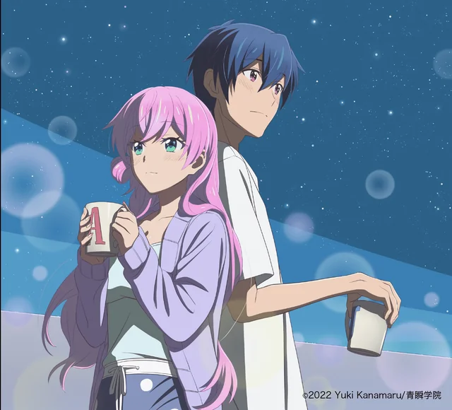

Genres
Romance
Romance anime explores love and relationships between its characters. This genre often focuses on the development of romantic feelings between its characters, as well as the challenges they face in maintaining those relationships.
-



 

Popular Romance Anime

After The Rain
After the Rain tells the story of Akira Tachibana, a high school student working part-time at a family restaurant, who starts falling in love with the manager, a forty-five-year-old divorcé with a young son. Akira struggles to determine why she is falling for Masami, and whether or not to reveal her feelings to him.
kaguya-sama
Kaguya is the daughter of a wealthy conglomerate family, and Miyuki is the top student at the school and well known across the prefecture. Although they like each other, they are too proud to confess their love, as they believe whoever does so first would "lose" in their relationship.
More than a married couples
Third year high school students Akari Watanabe and Jirō Yakuin are randomly paired together for their school's couples training program; a course that monitors and judges them based on how well they work together as mock newlyweds.